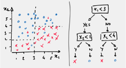

Chapter 3 Know your Classics
Before we dive into Neural Networks, keep in mind that Neural Nets have been around for a while and, until recently, they were not the method of choice for Machine Learning.
A zoo of algorithms exits out there, and we’ll briefly introduce here some of the classic methods for supervised learning. In the following we are looking at a few popular classification algorithms.
3.1 k-nearest neighbours
\(k\)-nearest neighbours is a very simple yet powerful technique. For an input \({\bf x}\), you retrieve the \(k\)-nearest neighbours in the training data, then return the majority class amoung the \(k\) values. You can also return the confidence as a proportion of the majority class.
For instance, in the example below, the prediction for 3-NN would be the positive class (red cross) with a 66% confidence, and the 5-NN prediction would be the negative class (blue circle with a 60% confidence).
Figure 3.1: Example of 3-NN and 5-NN.
Below you can see the results of 1-NN, 3-NN and 10-NN on 3 binary datasets. For each point of the 2D feature space, we report the confidence to belong to the positive class.

Figure 3.2: Decision boundaries on 3 problems. The intensity of the shades indicates the certainty we have about the prediction.
pros:
- It is a non-parametric technique.
- It works surprisingly well and you can obtain high accuracy if the training set is large enough.
cons:
- Finding the nearest neighbours is computationally expensive and doesn’t scale with the training set.
- It may generalise very badly if your training set is small.
- You don’t learn much about the features themselves.
3.2 Decision Trees
In decision trees (Breiman et al., 1984) and its many variants, each node of the decision tree is associated with a region of the input space, and internal nodes partition that region into sub-regions (in a divide and conquer fashion).

The regions are split along the axes of the input space (eg. at each node you take a decision according to a binary test such as \(x_2 < 3\)).

Figure 3.3: In Ada Boost and Random Forests multiple decision trees are used to aggregate a probability on the prediction.
Random Forests gained a lot of popularity before the rise of Neural Nets as they can be very efficiently computed.
For instance they where used for the body part identification in the Microsoft Kinect.
Real-Time Human Pose Recognition in Parts from a Single Depth Image J. Shotton, A. Fitzgibbon, A. Blake, A. Klpman, M. Finocchio, B. Moore, T. Sharp. 2011. https://goo.gl/UTM6s1
pros:
- It is fast.
cons:
- Decisions are taken along axes (eg. \(x_1<3\)) but it could be more efficient to split the classes along a diagonal (eg. \(x_1<x_2\)):
Figure 3.4: In Decision Trees, the feature space is split along axes (eg. \(x_1<3\)) but it could be more efficient to split the classes along a diagonal (eg. \(x_1<x_2\)).
See Also Ada Boost, Random Forests.
3.3 SVM
Until recently Support Vector Machines were the most popular technique around.
Like in Logistic Regression, SVM starts as a linear classifier: \[ y = [ {\bf x}^{\top}{\bf w} > 0 ] \]
The difference with logistic regression lies in the choice of the loss function .
Whereas in logistic regression the loss function was based on the cross-entropy, the loss function in SVM is based on the Hinge loss function:
\[ L_{SVM}( {\bf w}) = \sum_{i=1}^N [y_i=0]\max(0, {\bf x}_i^{\top} {\bf w}) + [y_i=1]\max(0, 1 - {\bf x}_i^{\top} {\bf w}) \]
From a geometrical point of view, SVM seeks to find the hyperplane that maximises the separation between the two classes.
Figure 3.5: SVM maximises the separation between classes.
There is a lot more to SVM, but this will be not coverd in this course.
Note that there is a priori no advantage of using linear SVM over logistic regression in terms of performance alone. It all depends on the type of data you have.
Recall that the choice of loss function directly relates to assumptions you make about the distribution of the prediction errors, and thus about the dataset of your problem.
This is formalised in the no free lunch theorem (Wolpert, 1996), which tells us that classifiers perform equally well when averaged over all possible problems. In other words: your choice of classifier should depend on the problem at hand.
Figure 3.6: No Free Lunch Theorem.
SVM gained popularity when it became associated with the kernel trick.
Recall that in linear regression, we managed to fit non-linear functions by augmenting the feature space with higher order polynomials of each the observations, e.g, \(x\), \(x^2\), \(x^3\), etc.
What we’ve done is to map the original features into a higher dimensional feature space: \(\phi: {\bf x}\rightarrow \phi({\bf x})\). In our case we had: \[ \phi ({x}) = \left( \begin{matrix} 1 \\ x \\ x^2 \\ x^3 \\ \vdots \end{matrix} \right) \]
Figure 3.7: Feature mapping is used to transform the input data into a new dataset that can be solved using a linear classifier.
Transforming the original features into more complex ones is a key ingredient of machine learning.
The collected features are usually not optimal for linearly separating the classes and it is often unclear how these should be transformed. We would like the machine learning technique to learn how to best recombine the features so as to yield optimal class separation .
So our first problem is to find a useful feature transformation \(\phi\). Another problem is that the size of the new feature vectors \(\phi({\bf x})\) could potentially grow very large.
Consider the following polynomial augmentations: \[ \phi \left([ x_1 \,,\, x_2 ]^{\top}\right) = [ 1 \,,\, x_1 \,,\, x_2 \,,\, x_1 x_2 \,,\, x_1^2 \,,\, x_2^2 ]^{\top} \] \[ \phi \left([ x_1 \,,\, x_2 \,,\, x_3 ]^{\top}\right) = [ 1 \,,\, x_1 \,,\, x_2 \,,\, x_3 \,,\, x_1 x_3 \,,\, x_1 x_2 \,,\, x_2 x_3 \,,\, x_1^2 \,,\, x_2^2 \,,\, x_3^2 ]^{\top} \]
The new feature vectors have significantly increased in size.
It can be shown that for input features of dimension \(p\) and a polynomial of degree \(d\), the transformed features are of dimension \(\frac{(p+d)!}{p!\, d!}\).
For example, if you have \(p=100\) features per observation and that you are looking at a polynomial of order 5, the resulting feature vector is of dimension about 100 millions!!
Now, recall that Least-Squares solutions are given by \[ {\bf w} = (X^{\top}X)^{-1}X^{\top}{\bf y} \] if \(\phi({\bf x})\) is of dimension 100 millions, then \(X^{\top}X\) is of size \(10^8 \times 10^8\). This is totally impractical.
So, we want to transform the original features into higher level features but this comes at the cost of greatly increasing the dimension of the original problem.
The Kernel trick offers an elegant solution to this problem and allows us to use very complex mapping functions \(\phi\) without having to ever explicitly compute them.
In most machine learning algorithms, we can show (see later) that \({\bf w}\) can be re-expressed in terms of the existing input feature vectors: \[ {\bf w} = \sum_{i=1}^n \alpha_i {\bf x}_i \] where \(\alpha_i\) are new weights defining \({\bf w}\) as a linear combination in the \({\bf x}_i\) data points.
Loss functions usually depend on computing the score \({\bf x}^{\top}{\bf w}\), which can now be re-written as: \[ {\bf x}^{\top}{\bf w} = \sum_{i=1}^n \alpha_i {\bf x}^{\top} {\bf x}_i \] The scalars \({\bf x}^{\top} {\bf x}_i\) are dot-products between feature vectors.
Now look at what happens when we use augmented features: \[ \phi({\bf x})^{\top}{\bf w} = \sum_{i=1}^n \alpha_i \phi({\bf x})^{\top} \phi({\bf x}_i) \]
To compute \(\phi({\bf x})^{\top}{\bf w}\), we only ever need to know how to compute the dot products \(\phi({\bf x})^{\top} \phi({\bf x}_i)\).
Introducing the kernel function: \[ \kappa({\bf x}, {\bf z} ) = \phi({\bf x})^{\top} \phi({\bf z}) \] we can rewrite the scores as: \[ \phi({\bf x})^{\top}{\bf w} = \sum_{i=1}^n \alpha_i \kappa({\bf x}, {\bf x}_i) \]
The kernel trick builds on the Theory of Reproducing Kernels, which we says that for a whole class of kernel functions \(\kappa\) we can find a mapping \(\phi\) that is such that \(\kappa({\bf x}, {\bf z} ) = \phi({\bf x})^{\top} \phi({\bf z})\).
The key is that we can define \(\kappa\) without having to explicitly define \(\phi\).
Many kernel functions are possible. For instance, the polynomial kernel is defined as: \[ \kappa({\bf u}, {\bf v}) = (r - \gamma {\bf u}^{\top} {\bf v})^d \] and one can show that this is equivalent to using a polynomial mapping as proposed earlier. Except that instead of requiring 100’s of millions of dimensions, we only need vectors of size \(n\) and to compute \(\kappa({\bf u}, {\bf v})\), which is linear in \(p\).
The most commonly used kernel is probably the Radial Basis Function (RBF) kernel: \[ \kappa({\bf u}, {\bf v}) = e^{- \gamma \| {\bf u} - {\bf v}\|^2 } \]
The induced mapping \(\phi\) is infinitely dimensional, but that’s OK because we never need to evaluate \(\phi({\bf x})\).

Figure 3.8: Decision Boundaries for SVM using a linear and polynomial kernels.

Figure 3.9: Decision Boundaries for SVM using Gaussian kernels. The value of gamma controls the smoothness of the boundary.
Let’s come back to the claim that we can write \[ {\bf w} = \sum_{i=1}^n \alpha_i {\bf x}_i \]
Many linear machine learning methods are based on minimising something like: \[ E({\bf w}) = \mathcal{L}( X {\bf w}, y) + \lambda \| {\bf w} \|^2 \]
For instance, in least squares, \[ \mathcal{L}( X {\bf w}, y) = \sum_{n=1}^N (y_i - {\bf x}_i^{\top} {\bf w})^2 \] and in SVM: \[ \mathcal{L}( X {\bf w}, y) = \sum_{i=1}^N [y_i=0]\max(0, {\bf x}_i^{\top} {\bf w}) + [y_i=1]\max(0, 1 - {\bf x}_i^{\top} {\bf w}) \]
The term \(\lambda \| {\bf w} \|^2\) is the regularisation term we already saw in linear regression.
When minimising \(E({\bf w})\), \(\boldsymbol{\hat{\textbf{w}}}\) is necessarily of the form: \[ \boldsymbol{\hat{\textbf{w}}} = X^{\top} \alpha = \sum_{i=1}^n \alpha_i {\bf x}_i \]
Proof:
Consider \(\boldsymbol{\hat{\textbf{w}}} = X^{\top} \alpha + {\bf v}\), with \({\bf v}\) such that \(X{\bf v} = 0\).
We show that \(E(X^{\top} \alpha + {\bf v}) > E(X^{\top} \alpha)\) if \({\bf v} \neq 0\):
\[ \begin{aligned} E(X^{\top} \alpha + {\bf v}) &= \mathcal{L}( X X^{\top} \alpha + X{\bf v} , y) + \lambda \| X^{\top} \alpha + {\bf v}\|^2 \\ &= \mathcal{L}( X X^{\top} \alpha , y) + \lambda\left(\alpha^{\top}XX^{\top}\alpha + 2 \alpha X {\bf v} + {\bf v}^{\top}{\bf v} \right) \\ &= \mathcal{L}( X X^{\top} \alpha , y) + \lambda \left(\alpha^{\top}XX^{\top}\alpha + {\bf v}^{\top}{\bf v} \right) \\ &> E(X^{\top} \alpha) \quad \text{if}\, {\bf v} \neq 0 \end{aligned} \]
now if \({\bf w} = X^{\top}\alpha\), then
\[ E({\bf w}) = E(\alpha)= \mathcal{L}(XX^{\top}\alpha, {\bf y}) + \lambda \alpha^{\top}XX^{\top}\alpha \]
We call \(K = XX^{\top}\) the Kernel Matrix. It is a matrix of dimension \(n \times n\) whose entries are the scalar products between observations: \[ K_{i,j} = {\bf x}_i ^{\top}{\bf x}_j \]
Note that the expression to minimise \[ E(\alpha) = \mathcal{L}(K\alpha, {\bf y}) + \lambda \alpha^{\top}K\alpha \] only contains matrices and vectors of dimension \(n \times n\) or \(n \times 1\). In fact, even if the features are of infinite dimension (\(p=+\infty\)), our reparameterised problem only depends on the number of observations \(n\).
When we transform the features \({\bf x} \rightarrow \phi({\bf x})\). The expression to minimise keeps the same form: \[ E(\alpha) = \mathcal{L}(K\alpha, {\bf y}) + \lambda \alpha^{\top}K\alpha \] the only changes occur for \(K\): \[ K_{i,j} = \phi({\bf x}_i) ^{\top}\phi({\bf x}_j) \]
Thus we never really need to explicitly compute \(\phi\), we just need to know how to compute \(\phi({\bf x}_i) ^{\top}\phi({\bf x}_j)\).
Support vector machines are not the only algorithm that can avail of the kernel trick. Many other linear models (including logistic regression) can be enhanced in this way. They are known as kernel methods.
A major drawback to kernel methods is that the cost of evaluating the decision function is proportional to the number of training examples, because the \(i^{th}\) example contributes a term \(\alpha_i \kappa({\bf x},{\bf x}_i)\) to the decision function.
SVM somehow mitigates this by learning which examples contribute the most. These training examples are known as support vectors.
The cost of training is however still high for large datasets (eg. with tens of thousands of datapoints).
Evidence that deep learning could outperform kernel SVM on large datasets emerged in 2006 when team lead by G. Hinton demonstrated that a neural network on the MNIST benchmark. The real tipping point occured with the 2012 paper by A. Krizhevsky, I. Sutskever and G. Hinton (see handout-00).
See Also, Gaussian Processes, Reproducing kernel Hilbert spaces, kernel Logistic Regression.
Laurent El Ghaoui’s lecture at Berkeley
Eric Kim’s python tutorial on SVM
3.4 Take Away
Neural Nets have existed for a while, but it is only recently (2012) that they have started to surpass all other techniques.
Kernel based techniques have been very popular up to recently as they offer an elegant way of transforming input features into more complex features that can then be linearly separated.
The problem with kernel techniques is that they cannot deal efficiently with large datasets (eg. more than 10’s of thousands of observations)